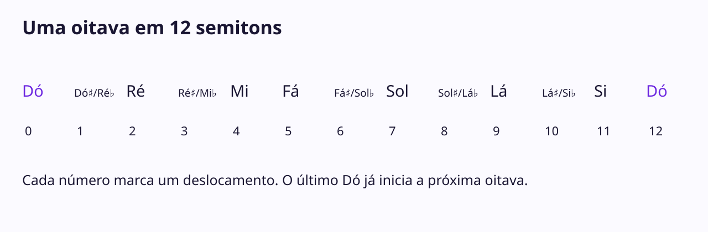
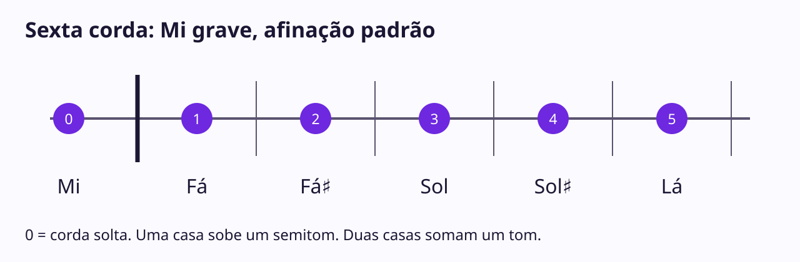

Conheça as notas musicais
Ao terminar, você poderá usar uma referência para nomear uma nota, encontrar uma
nota vizinha e comparar dois sons. Você não precisa ter um instrumento nem saber
ler partitura. Separe cerca de 8 minutos, com tempo para repetir os exemplos.
1. Uma frase antes dos nomes
Ouça esta frase curta. Ela tem três sons, do mais
grave para o mais agudo. Grave e agudo descrevem a altura do som. Um som grave
pode ser forte ou fraco; aumentar o volume não transforma um som grave em agudo.
Use um volume confortável para comparar os exemplos.
Agora ouça estes dois sons. O segundo é mais grave
que o primeiro. Essa comparação já é uma forma de prestar atenção às notas.
Se você não puder ouvir, acompanhe as sequências escritas e os diagramas. Eles
ensinam nomes e distâncias; essa alternativa não verifica percepção auditiva.
Os áudios desta aula são sons eletrônicos de referência. Eles não são gravações
de guitarra, violão ou baixo. A frase inicial se chama Dó–Ré–Mi.
2. Sete nomes que voltam a aparecer
Usamos estes nomes naturais:
| Nome |
Dó |
Ré |
Mi |
Fá |
Sol |
Lá |
Si |
| Letra |
C |
D |
E |
F |
G |
A |
B |
Aqui, Dó corresponde a C, Ré a D, e assim por diante. As letras ajudam a ler
cifras, afinadores e nomes que aparecem em materiais de música.
Depois de Si, o nome Dó aparece novamente, em um registro mais agudo. Compare
dois Dós em oitavas diferentes. Eles compartilham o
nome, mas não são a mesma altura exata. Uma oitava separa esses dois registros.
Você também encontrará os mesmos nomes em registros mais graves.
Você não precisa descobrir o nome de qualquer som sem ajuda. Nesta aula, o nome
vem junto com uma referência que você pode ouvir e consultar.
3. As distâncias entre as notas
Pense em pequenos passos de altura. Na afinação usual de guitarras, baixos e
teclados, dividimos uma oitava em 12 semitons iguais. Esse é o sistema usado
nos exemplos desta aula; outras músicas e afinações podem organizar as alturas
de outras formas.
Um semitom é um desses pequenos passos. Um tom reúne dois semitons.
- Ouça Mi–Fá: a distância é um semitom.
- Ouça Dó–Ré: a distância é um tom.
Os nomes naturais não ficam todos à mesma distância. Mi–Fá e Si–Dó já
são vizinhos de semitom. Entre Dó e Ré, por exemplo, há uma posição intermediária.
Você verá essa posição com mais clareza na próxima seção.
4. Sustenido e bemol
O símbolo ♯, chamado sustenido, sobe a nota em um semitom. O símbolo ♭,
chamado bemol, desce a nota em um semitom.
Dó♯ fica um semitom acima de Dó. Ré♭ fica um semitom abaixo de Ré. Na afinação
usada aqui, Dó♯ e Ré♭ produzem a mesma altura, embora tenham nomes diferentes.
Ouça essa altura repetida. A escolha da escrita
pode depender do contexto musical; por enquanto, basta reconhecer os dois nomes.
Veja uma oitava subindo. Cada deslocamento até a próxima posição vale um semitom:
Dó · Dó♯/Ré♭ · Ré · Ré♯/Mi♭ · Mi · Fá · Fá♯/Sol♭ · Sol · Sol♯/Lá♭ · Lá · Lá♯/Si♭ · Si · Dó
São 12 deslocamentos. O último Dó marca o início da próxima oitava, não uma
13ª posição diferente dentro da mesma oitava. Ouça a sequência completa
acompanhando o 
mapa de semitons.
Não é preciso memorizar todas as grafias hoje: use o mapa como referência.
5. Sua vez
Comparação de sons. Ouça a referência chamada Dó.
Qual opção repete exatamente a mesma altura e o mesmo registro?
Você pode alternar referência e opções quantas vezes precisar. A resposta está
na seção “Respostas e nova tentativa”, depois das outras perguntas.
Semitom. Subindo a partir de Mi, qual nota fica um semitom acima: Fá, Fá♯ ou Sol?
Tom. Em Dó–Dó♯–Ré, quantos semitons há de Dó até Ré: um, dois ou três?
6. Respostas e nova tentativa
Na comparação, a resposta é Som C. O Som A é mais agudo e o Som B é mais grave
que a referência. Se ficou difícil, ouça a referência, apenas uma opção, e depois
a referência de novo. Compare a altura, sem tentar adivinhar pelo nome.
Agora tente outra referência: Mi. Escolha entre
Som A, Som B e
Som C. Nesta vez, a resposta é Som A.
Um semitom acima de Mi é Fá. Mi–Fá♯ reúne dois passos: Mi–Fá e Fá–Fá♯.
Para tentar de novo, encontre o nome natural um semitom acima de Si. É Dó.
De Dó até Ré há dois semitons, ou um tom. Conte os deslocamentos:
Dó até Dó♯ é um; Dó♯ até Ré é o segundo. Se você contou três, contou os nomes
escritos, não as distâncias. Repita com Fá–Fá♯–Sol: também são dois passos.
7. Uma pequena aplicação
Volte à frase Dó–Ré–Mi. Acompanhe os três nomes no
mapa. Entre Dó e Ré há um tom; entre Ré e Mi também há um tom.
Se quiser, imite a frase com a voz em uma região confortável, podendo escolher
outra oitava. Essa tentativa é uma observação sua, sem avaliação automática.
Para continuar: escolha uma nota no mapa, diga seu nome e procure a posição um
semitom acima. Confira antes de repetir com outra nota. A aplicação na guitarra
está em “Encontre suas primeiras notas na guitarra”.
Referências opcionais
Todo o método necessário está nesta aula. Para consultar depois:
Open Music Theory, “Scales and scale degrees”, seções iniciais e “The Chromatic Scale”
explica passos e a sequência cromática. O texto está em inglês, sem conta de acesso
na consulta de produção; use o mapa e os exemplos acima como alternativa em português.
Encontre suas primeiras notas na guitarra
Prévia esquemática com referências eletrônicas de altura. Sem locução ou filmagem das mãos. Pause para responder às perguntas.
Legendas em texto
Você vai localizar Mi, Fá, Sol e Lá na sexta corda e tocar uma frase com essas
posições. Basta trabalhar entre a corda solta e a casa 5. Separe de 6 a 10 minutos,
com liberdade para repetir devagar. Velocidade não é o objetivo desta aula.
1. Uma frase em uma corda
Ouça Mi–Fá–Sol–Fá–Mi. Você vai encontrar essa frase
sem procurar notas no braço inteiro. O áudio é uma referência eletrônica de altura,
não uma execução gravada na guitarra. O storyboard demonstra posições no diagrama;
ele não mostra o movimento real das mãos.
2. Preparação e referência
A guitarra precisa estar na afinação padrão. Da sexta para a primeira corda,
os nomes são Mi, Lá, Ré, Sol, Si, Mi. A sexta é a mais grossa. Os dois Mis ficam
em registros diferentes; nesta aula usamos o Mi grave da sexta corda.
Se precisar, use um afinador configurado para a afinação padrão. Identifique a
corda antes de mexer na tarraxa e siga as instruções do seu afinador; esta aula
não ensina a regular o instrumento. Sem certeza sobre a afinação, você pode fazer
a parte visual agora e deixar a comparação de alturas para depois.
Corda solta significa tocar sem pressionar nenhuma casa. Vamos chamar essa
posição de 0. Para tocar uma casa, pressione a corda no espaço correspondente,
perto do traste do lado do corpo da guitarra, sem ficar em cima do metal. Use
apenas a pressão necessária para soar a nota, com postura confortável. Pare se
sentir dor. A casa é uma posição; ela não indica o número do dedo.
Você pode usar o indicador na casa 1 e o anelar na casa 3, se isso for confortável.
Para explorar a casa 5, mude a posição da mão em vez de forçar uma abertura grande.
Uma demonstração de técnica com uma pessoa real continua sendo o melhor apoio
para dúvidas sobre a posição das mãos.
3. Uma casa acrescenta um semitom
Na mesma corda, avançar uma casa em direção ao corpo sobe a altura em um semitom.
Duas casas somam dois semitons, ou um tom. Confira as posições:
| Casa |
0, solta |
1 |
2 |
3 |
4 |
5 |
| Nota |
Mi |
Fá |
Fá♯ |
Sol |
Sol♯ |
Lá |
| Letra |
E |
F |
F♯ |
G |
G♯ |
A |
Veja o 
diagrama de uma corda. A posição 0 fica
antes da pestana; as casas 1–5 ficam entre os trastes. O desenho mostra somente a
sexta corda, não a orientação de todas as cordas no braço.
Mi–Fá já é um semitom: da corda solta à casa 1. Fá–Sol é um tom: casa 1, depois
Fá♯ na casa 2, depois Sol na casa 3. Não pule o sustenido ao contar os passos.
Compare as referências: Mi, solta,
Fá, casa 1, Fá♯, casa 2,
Sol, casa 3, Sol♯, casa 4
e Lá, casa 5. Em caixas pequenas, os sons graves podem
ficar pouco audíveis. Use fones se precisar, sem aumentar demais o volume.
Para rever os nomes e as distâncias, consulte
“Conheça as notas musicais”, seções 2–4.
O resumo desta seção permite continuar mesmo sem abrir essa referência.
4. Sua vez de localizar
Pergunta 1. Se Mi está na corda solta, em qual casa fica Sol: 2, 3 ou 4?
Primeiro responda olhando o diagrama. Depois, se tiver a guitarra, toque e compare
com a referência de Sol. O som da guitarra terá outro timbre; compare a altura.
Pergunta 2. Partindo de Sol na casa 3, avance um tom. Você chega a Sol♯ na casa 4,
Sol na casa 3 ou Lá na casa 5?
Sem guitarra, aponte ou diga os números das casas e acompanhe as referências de
áudio. Isso treina a localização, mas não demonstra que você executou o movimento.
5. Confira e ajuste
Sol fica na casa 3. A casa 2 é Fá♯, e a casa 4 é Sol♯. Se errou, volte a um
ponto conhecido e conte: Mi(0), Fá(1), Fá♯(2), Sol(3). Tente novamente começando em Fá.
Um tom acima de Sol fica Lá, casa 5. Uma casa levaria apenas a Sol♯.
Para repetir com outro ponto de partida: um tom acima de Fá, casa 1, é Sol, casa 3.
Se a nota não soar limpa, confira a corda, aproxime o dedo do traste correspondente
e tente com pouca pressão. Se a altura não combinar com a referência, confira
primeiro a afinação e a casa. Não aperte mais a corda para tentar corrigir a nota.
6. A frase completa
Toque na sexta corda as posições 0–1–3–1–0, dizendo os nomes:
Mi–Fá–Sol–Fá–Mi. Ouça a referência completa novamente.
Faça uma nota por vez em uma velocidade confortável, sem obrigação de tocar junto
com o áudio. Depois, tente a frase sem olhar a tabela e confira.
Observe: você escolheu a sexta corda, encontrou as posições, ouviu cada nota e
conseguiu nomeá-las? Se ficou difícil, repita apenas Mi–Fá e depois acrescente Sol.
Não há avaliação automática de microfone, técnica ou fluência nesta atividade.
Como próxima prática, encontre Lá na casa 5 e retorne a Sol na casa 3. Use a tabela
até não precisar dela para esse pequeno percurso. Você praticou uma parte da corda
Mi; ainda não estudou todas as notas do braço nem as notas da corda Lá.